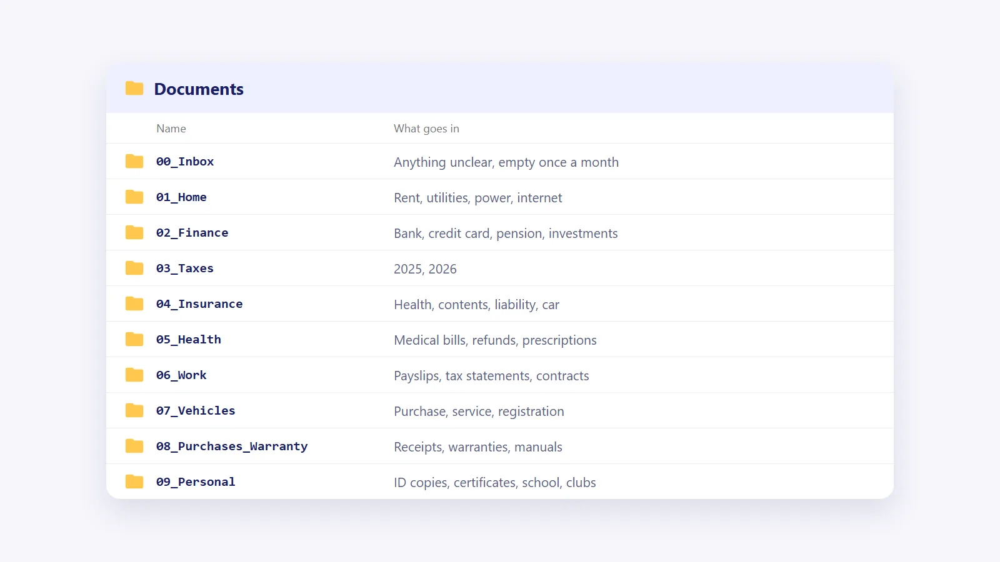
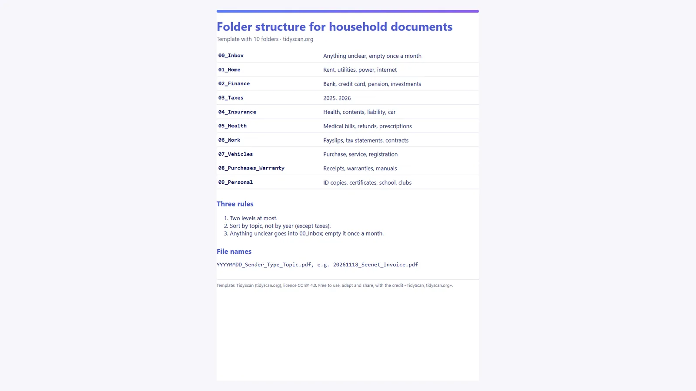

A folder structure for household documents, with template
Updated 18 November 2026 · Silvan, founder of TidyScan · 6 min read
Most digital filing systems don't fail at scanning, they fail at the folder structure. Either there is a single «Scans» folder with everything in it, or there are so many subfolders that every document becomes a decision. This folder structure template sits in between: ten folders that cover almost every household and three rules that keep it working in five years. You can download it as a ZIP with empty folders and as a printable PDF at the end of the page.
Three rules for a filing system that lasts
1. Two levels at most. One main folder per area of life, with at most one level below it. Every extra level is one more decision when filing and one more place where a document can get lost.
2. Sort by topic, not by year. If «2025» and «2026» are your top level, you will later look for your contents insurance in five different folders. The year is in the file name anyway (see file naming convention). The only exception is taxes, because tax returns work year by year.
3. One inbox folder for anything unclear. Whatever you can't place straight away goes into 00_Inbox. Empty it once a month. That keeps your digital filing clean without turning every document into a question of principle.
The folder structure template: ten folders
| Folder | What goes in |
|---|---|
00_Inbox | Anything you can't place straight away |
01_Home | Rent or mortgage, utilities, power, internet |
02_Finance | Bank, credit card, pension, investments |
03_Taxes | One subfolder per year: 2025, 2026 |
04_Insurance | Health, contents, liability, car |
05_Health | Medical bills, refunds, prescriptions |
06_Work | Payslips, tax statements, contracts, references |
07_Vehicles | Purchase, service, registration |
08_Purchases_Warranty | Receipts, warranties, manuals |
09_Personal | ID copies, certificates, school, clubs |

Why numbers in front of the names? So the order stays the same on every device. Without numbers, Windows sorts differently from your phone, and Inbox ends up somewhere in the middle.
Why underscores and no special characters? They avoid trouble when you sync folders between devices and programs.
Doesn't fit? Delete folders you don't need (no car, no 07_Vehicles) and add two of your own at most, for example 10_Kids or 11_Projects. More than twelve main folders get confusing.
Where do documents go that fit two folders?
That is the most common question, and the answer is simple: where you would look first. The health insurance premium goes to 04_Insurance, the doctor's bill to 05_Health, even if the insurer pays it back.
You don't need to file anything twice for your tax return. Put a copy in 03_Taxes/2026 only if you really need the document for it, such as your annual salary statement or a donation receipt.
What my own folder structure looks like
My folder structure kept changing at first. By now it is quite stable and very close to the template above. My rule for changes: when too much on one topic collects in the inbox, it gets its own folder, or I reorganise. That is how 10_Projects came about for project documents, and 02_Finance became «Finance and investments». Everything else has stayed the same.
Using the folder structure in TidyScan
TidyScan files every scanned document into one of several smart folders automatically. For each folder you enter keywords, for example:
| Smart folder | Keywords |
|---|---|
01_Home | rent, utilities, power, internet |
04_Insurance | insurance, policy, premium |
05_Health | doctor, hospital, pharmacy, refund |
When the app finds a matching keyword, the document lands in the right folder. Correct it once, and it remembers the folder for that sender.
The free plan has one folder; 00_Inbox is ideal for it. Pro has five smart folders: pick the five that get the most post. Plus has no limit. How to get invoices into these folders step by step is in the guide scan invoices.
TidyScan is coming to Google Play soon.
Download the folder structure template
- Folder structure as ZIP (2 KB): unzip, drag the
Documentsfolder where you want it, done. - Folder structure as PDF (1 page): to print, with examples for each folder.

You may use, adapt and share the template freely, also on your website or in a course. It is licensed under CC BY 4.0; the only condition is the credit «TidyScan, tidyscan.org».
Conclusion: ten folders, three rules, done
A good folder structure is boring: few folders, by topic rather than by year, and an inbox for anything unclear. It doesn't have to be set in stone, but it should be simple enough that filing needs no thought. Add file names with the date, and every document can be found by searching. How the whole switch to paperless works is in the guide paperless home office, and every TidyScan feature is on the home page.
Frequent questions
Can I share the folder structure template?
Yes. The template is licensed under CC BY 4.0: you may use, adapt and share it freely, also on a blog or in a course. The only condition is the credit «TidyScan, tidyscan.org».
Does the folder structure work on a Mac or in OneDrive?
Yes. They are ordinary folders without special characters. You can create them on any computer, in any cloud and on your phone.
Do I need a subfolder for every year?
Only for taxes. Everywhere else the year is in the file name, and the folder sorts itself.
What about paper I have to keep?
Keep one physical folder for originals, such as certificates and signed contracts. File the scan digitally as well, so everything is in one place.